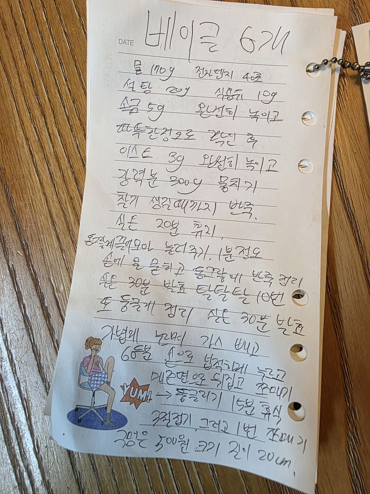

← 전체 레시피
빵
🥯 베이글
손으로 적은 노트를 그대로 옮긴 레시피입니다.
분량
6개
굽기
반죽 · 발효 중심 (굽기 온도는 원본에 미기재)
📷 원본 노트 사진 보기
재료
반죽
물 170g (전자레인지 40초)
설탕 20g
식용유 10g
소금 5g
이스트 3g
강력분 300g
만드는 법
물을 전자레인지에 40초 돌리고 설탕·식용유·소금을 완전히 녹인다.
미지근한 정도로 식힌 후 이스트 3g을 완전히 녹인다.
강력분 300g을 넣어 뭉치고, 찰기가 생길 때까지 반죽한다.
실온 20분 휴지.
동그랗게 모아 1분 정도 눌러준다. 손에 물을 묻히고 동그랗게 반죽을 정리한다.
실온 30분 발효 → 탁탁탁 10번 → 다시 둥글게 정리 → 실온 30분 발효.
가볍게 누르며 가스를 빼고 6등분한다.
손으로 납작하게 누르고 매끈한 면이 겉으로 오게 뒤집어 돌돌 말아 동글리기 → 15분 휴식.
길쭉하게 밀어 한 번 접고 이어 붙인다. 구멍은 500원 동전 크기, 길이 20cm.

원본 노트 사진 — 탭하면 크게 볼 수 있어요